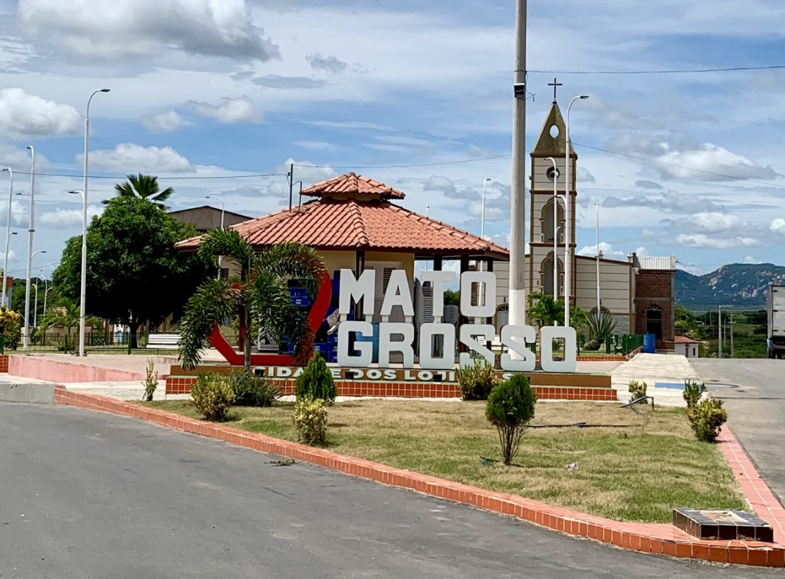

Mato Grosso é um dos maiores estados do Brasil, localizado na região Centro-Oeste, e se destaca tanto pela sua riqueza natural quanto pela força econômica. A capital é Cuiabá, conhecida pelo clima quente e pela importância histórica na ocupação do interior do país. O estado teve origem no período colonial, com a descoberta de ouro no século XVIII. Com o passar do tempo, a economia deixou de ser mineradora e passou a ser dominada pelo agronegócio. Hoje, Mato Grosso é um dos maiores produtores de grãos do mundo, especialmente soja, milho e algodão, além de ter um grande rebanho bovino.
